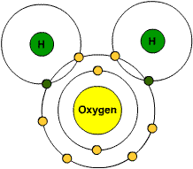
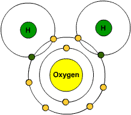

This is a project submmited by Basu dev neupane from software enginnering second sem 2015 2014 batch of
Nepal College of Information Technology sharing some information about the chemical formulas of sciencename of some prime
minister of nepal,names of some mammals, birds and some information about superheroes.
In science, a formula is a concise way of expressing information symbolically as in a mathematical or chemical formula.
The informal use of the term formula in science refers to the general construct of a relationship between given quantities.
The plural of formula can be spelled either as formulas or formulae (from the original Latin). some chemical and
mathematical formulas of science are as follows.
when sodium hydroxide(NaOH) is reacted with hydrochloric acid(HCl) it gives salt sodium chloride(NaCl) and water H2O
In this formula it says the whole square of ( a + b ) gives a2+2.a.b+b2
Created by writer Gardner Fox and artist Harry Lampert, the original Flash first appeared
in Flash Comics #1 (January 1940).Nicknamed the "Scarlet Speedster", the "Crimson Comet",
"The Blur", and "The Streak", all incarnations of the Flash possess "super speed",
which includes the ability to run and move extremely fast, use superhuman reflexes, and
seemingly violate certain laws of physics.His real name is Barry Allen an assistant scientist
from the Criminal and Forensic Science Division of Central City Police DepartmenAnd he is also
the founding member of the justice league.
Daredevil was created by writer-editor Stan Lee and artist Bill Everett, with an unspecified amount of
input from Jack Kirby.The character first appeared in Daredevil #1 (April 1964).Daredevil's origin story
relates that while living in the Hell's Kitchen neighborhood of New York City, Matt Murdock is blinded by
a radioactive substance that falls from an oncoming vehicle while pushing a man to safety from the oncoming
truck. While he no longer can see, the radioactive exposure heightens his remaining senses beyond normal
human ability and gives him a type of sonar which acts as his vision.
often in relation to the X-Men superhero team.Born James Howlett and commonly known as Logan, Wolverine
is a mutant who possesses animal-keen senses, enhanced physical capabilities, and powerful regenerative
ability known as a healing factor. He has been depicted variously as a member of the X-Men, Alpha Flight, and the Avengers.

 
